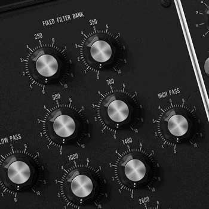

Moog Model 15 App
Classic sounding app from Moog available for iPad, iPhone, iPod touch and macOS here.
This sample is a mix of noise feed through a Fixed Filter Bank. Press Play to listen or download a ogg file here.
Set loop start and loop end
Starts at 0 s.
Stops at 0 s.
If the stop time is lower or equal to the start time, it'll loop over the
whole track.